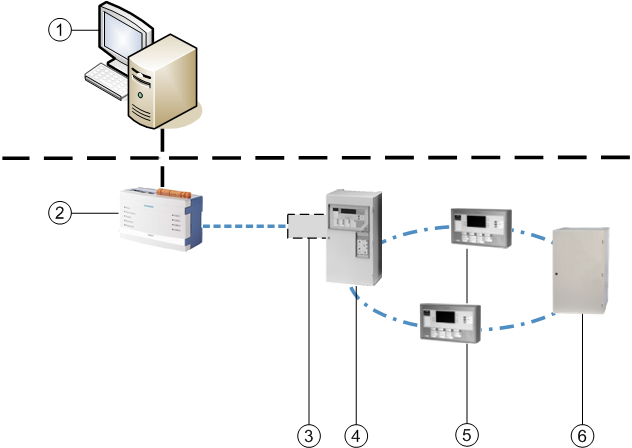
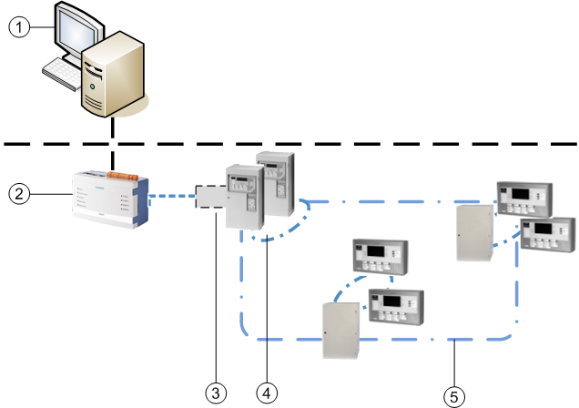

CS11 Fire System Architecture
The AlgoRex CS1140 (referred to as CS11 in this documentation) is a fire detection system, which is physically made up of:
- CC11 panels with separated terminals (CT11)
- CK11 gateways
- CI11 panels, an integrated model that includes the CT11 terminal
All of these units are connected over a local bus (C-Bus). In Desigo CC, the CI11 panels are mapped as CC11 panels and CT11 terminals are not explicitly present (they are represented by CC11 panels).
Cerloop Network
Multiple CS11 fire systems can operate on a Cerloop network, a redundant, loop-based architecture that connects to external hosts via a dedicated serial interface, the MK7022 unit.
Desigo CC Integration
Both as a single system (via CK11) and on Cerloop (via MK7022), the fire system is integrated into Desigo CC through the NK823x Ethernet Port.
The NK823x act as a BACnet gateway and allows for mapping the connected fire units into a BACnet network. Fire panels and gateways are represented as BACnet devices.
For more information, see BACnet Networks for NK823x DMS Applications.

Item | Description |
1 | Management station |
2 | NK823x Ethernet Port |
3 | CK11 gateway (an additional board inside a CC11 or CI11) |
4 | CI11 panel |
5 | CT11 terminals |
6 | CC11 panel |
| BACnet/IP Ethernet |
| Serial connection (Cerban/ISO1745) |
C-Bus |



Item | Description |
1 | Management station |
2 | NK823x Ethernet Port |
3 | MK7022 Communication unit |
4 | CS11 System |
5 | Cerloop including multiple CS11 systems |
| BACnet/IP Ethernet |
| Serial connection (ISO1745) |
C-Bus |